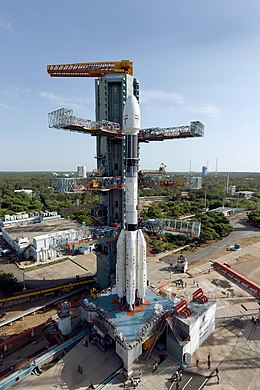

The Geosynchronous Satellite Launch Vehicle (GSLV) project was initiated in 1990 with the objective of acquiring an Indian launch capability for geosynchronous satellites The first development flight of the GSLV (Mk I configuration) was launched on 18 April 2001 was a failure as the payload failed to reach the intended orbit parameters. The launcher was declared operational after the second development flight successfully launched the GSAT-2 satellite. During the initial years from the initial launch to 2014 the launcher had a checkered history with only 2 successful launches out of 7.